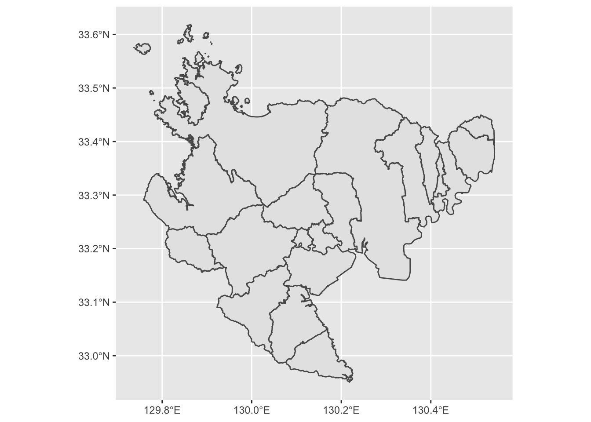
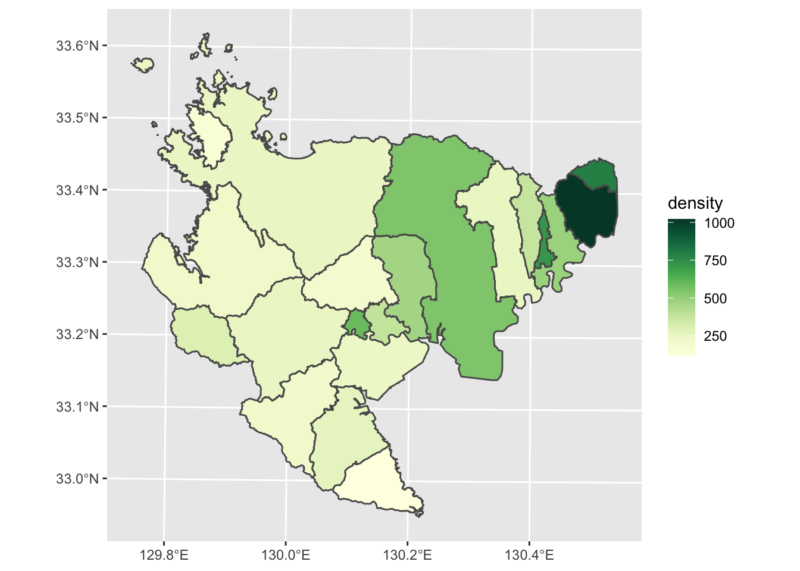

3 コロプレス・マップ（塗り分け地図）
3.1 概要
コロプレスマップ（塗り分け地図）を作成する方法を説明します。 佐賀県の市町村別人口密度の塗り分け地図を作成しましょう。
3.2 データの準備
「佐賀県オープンデータカタログサイト」にある「オープンデータマップ用データセット」を使用します。
- 男女別人口総数及ひ世帯総数（市町村別）
- ポリゴン（市町村別）
上記2つのファイル（410004saga.xlsxと410004saga.geojson）をダウンロードしてください。
ワーキングディレクトリの直下にdataフォルダを作成し，ダウンロードしたファイルを保存してください（今後，GISデータはこのフォルダに保存することにしましょう）。
3.3 地図の描画
まず，使用するライブラリを読み込みます。ここでは，tidyverse（地図の描画に使うggplot2ライブラリが含まれています）に加えて，GISデータを扱うライブラリsfを使用します。
library(tidyverse)## ─ Attaching packages ──────────────────── tidyverse 1.3.1 ─## ✓ ggplot2 3.3.5 ✓ purrr 0.3.4
## ✓ tibble 3.1.2 ✓ dplyr 1.0.7
## ✓ tidyr 1.1.3 ✓ stringr 1.4.0
## ✓ readr 1.4.0 ✓ forcats 0.5.1## ─ Conflicts ───────────────────── tidyverse_conflicts() ─
## x dplyr::filter() masks stats::filter()
## x dplyr::lag() masks stats::lag()library(sf)## Linking to GEOS 3.8.1, GDAL 3.2.1, PROJ 7.2.1次に，先ほどdataフォルダに保存した410004saga.geojsonを，
sfライブラリのst_read関数を使って読み込みます。
map <- st_read("data/410004saga.geojson")## Reading layer `410004saga' from data source
## `/Users/kazukitamura/github/giswithr/data/410004saga.geojson'
## using driver `GeoJSON'
## Simple feature collection with 20 features and 4 fields
## Geometry type: MULTIPOLYGON
## Dimension: XY
## Bounding box: xmin: 129.7368 ymin: 32.95054 xmax: 130.5424 ymax: 33.6189
## Geodetic CRS: WGS 84読み込んだmapデータをプロットします。
ggplot() + geom_sf(data = map) 
できました。簡単ですね。
3.4 地図投影変換
先ほど表示された佐賀県の地図は，横軸に経度を，縦軸に緯度をとった平面にプロットしたものでした。 これを「平面直角座標系」に変換して，表示してみましょう。
map2 <- st_transform(map, 6670)
ggplot() + geom_sf(data = map2) 微妙な違いがわかりますか？
3.5 統計データによる塗り分け
まず，利用する統計データを読み込み，中身を確認してみましょう。
Excelファイルを読み込むのに，readxlライブラリのread_excel関数を使います。
library(readxl)
dat <- read_excel("data/410004saga.xlsx")
head(dat, 3)## # A tibble: 3 x 6
## KEY_CODE 人口総数 市区町村 ` 男` ` 女` 世帯総数
## <chr> <dbl> <chr> <dbl> <dbl> <dbl>
## 1 412015 236372 佐賀市 111453 124919 93306
## 2 412023 122785 唐津市 57547 65238 43872
## 3 412031 72902 鳥栖市 34799 38103 27630ここで，先ほど地図を描くのに使ったデータの中身もみてみましょう。
head(map2, 3)## Simple feature collection with 3 features and 4 fields
## Geometry type: MULTIPOLYGON
## Dimension: XY
## Bounding box: xmin: -117268.6 ymin: -1173.744 xmax: -54075.69 ymax: 69215.3
## Projected CRS: JGD2011 / Japan Plane Rectangular CS II
## KEN_NAME GST_NAME CSS_NAME KEY_CODE geometry
## 1 佐賀県 鹿島市 <NA> 412074 MULTIPOLYGON (((-82226.11 3...
## 2 佐賀県 唐津市 <NA> 412023 MULTIPOLYGON (((-106350 451...
## 3 佐賀県 神埼市 <NA> 412104 MULTIPOLYGON (((-60455.97 2...両方のデータにKEY_CODEという同じデータがあるのがわかります。
これをキーにして，2つのデータを結合します。
dat2 <- left_join(map2, dat)## Joining, by = "KEY_CODE"head(dat2)## Simple feature collection with 6 features and 9 fields
## Geometry type: MULTIPOLYGON
## Dimension: XY
## Bounding box: xmin: -117268.6 ymin: -1173.744 xmax: -54075.69 ymax: 69215.3
## Projected CRS: JGD2011 / Japan Plane Rectangular CS II
## KEN_NAME GST_NAME CSS_NAME KEY_CODE 人口総数 市区町村 男 女 世帯総数
## 1 佐賀県 鹿島市 <NA> 412074 29684 鹿島市 13920 15764 10124
## 2 佐賀県 唐津市 <NA> 412023 122785 唐津市 57547 65238 43872
## 3 佐賀県 神埼市 <NA> 412104 31842 神埼市 15172 16670 10913
## 4 佐賀県 杵島郡 江北町 414247 9583 江北町 4497 5086 3225
## 5 佐賀県 多久市 <NA> 412040 19749 多久市 9146 10603 6847
## 6 佐賀県 東松浦郡 玄海町 413879 5902 玄海町 3035 2867 1918
## geometry
## 1 MULTIPOLYGON (((-82226.11 3...
## 2 MULTIPOLYGON (((-106350 451...
## 3 MULTIPOLYGON (((-60455.97 2...
## 4 MULTIPOLYGON (((-78005.98 2...
## 5 MULTIPOLYGON (((-76464.8 27...
## 6 MULTIPOLYGON (((-106304.2 5...このように，対応する2つのデータを結合するときには，dplyrライブラリのleft_join関数が便利です。この関数が2つのデータに共通の列名を自動的に見つけて，そのデータに基づいて2つのデータを結合してくれます。これで，地図データに人口や世帯数のデータを結びつけることができました。
この章の目的は，人口密度のコロプレスマップを作ることですので，市町村の面積データが必要です。先ほどと同様に，別のところから面積データを持ってきでjoinしてもいいのですが，ここでは地図データから面積を計算してみましょう。sfライブラリのst_area関数を使います。
dat2$area <- st_area(dat2)
dat2$area <- units::set_units(dat2$area, km^2)
dat2$area <- units::drop_units(dat2$area)
dat2$density <- dat2$人口総数 / dat2$area
head(dat2)## Simple feature collection with 6 features and 11 fields
## Geometry type: MULTIPOLYGON
## Dimension: XY
## Bounding box: xmin: -117268.6 ymin: -1173.744 xmax: -54075.69 ymax: 69215.3
## Projected CRS: JGD2011 / Japan Plane Rectangular CS II
## KEN_NAME GST_NAME CSS_NAME KEY_CODE 人口総数 市区町村 男 女 世帯総数
## 1 佐賀県 鹿島市 <NA> 412074 29684 鹿島市 13920 15764 10124
## 2 佐賀県 唐津市 <NA> 412023 122785 唐津市 57547 65238 43872
## 3 佐賀県 神埼市 <NA> 412104 31842 神埼市 15172 16670 10913
## 4 佐賀県 杵島郡 江北町 414247 9583 江北町 4497 5086 3225
## 5 佐賀県 多久市 <NA> 412040 19749 多久市 9146 10603 6847
## 6 佐賀県 東松浦郡 玄海町 413879 5902 玄海町 3035 2867 1918
## geometry area density
## 1 MULTIPOLYGON (((-82226.11 3... 111.11309 267.1512
## 2 MULTIPOLYGON (((-106350 451... 487.16068 252.0421
## 3 MULTIPOLYGON (((-60455.97 2... 124.00616 256.7776
## 4 MULTIPOLYGON (((-78005.98 2... 24.83140 385.9226
## 5 MULTIPOLYGON (((-76464.8 27... 96.67014 204.2927
## 6 MULTIPOLYGON (((-106304.2 5... 35.90699 164.3691平面直角座標系の距離がm単位になっていますので，st_areaで計算した面積はm2単位になっています。
そこで，unitsライブラリのset_units関数で，km2単位に変換しています。
さらに，人口密度を計算するときに単位が邪魔なので，drop_units関数で単位を落としています。
さて，塗り分け地図を描くには，geom_sfの中で，densityでfillしろと指示するだけです。
2行目は塗り潰しのカラーパレットを指定しています。
ggplot() + geom_sf(mapping = aes(fill = density), data = dat2) +
colorspace::scale_fill_continuous_sequential("YlGn")